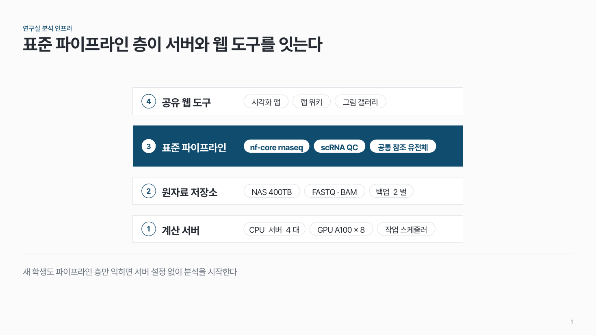
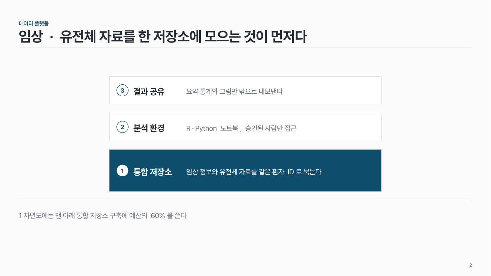
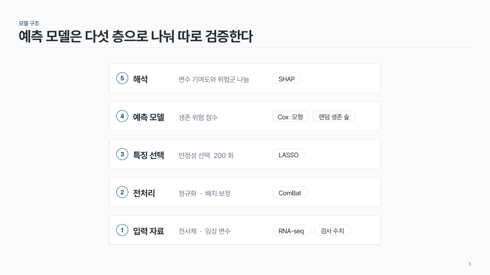

레이어 스택 struct-08
아래층이 위층을 받치는 층 구조. 핵심 층 하나를 크게, 진하게.

이 시안
4층 · 구성 요소 알약 · 파이프라인 층 강조(1.5배) · 결론 줄
슬라이드 제목: 표준 파이프라인 층이 서버와 웹 도구를 잇는다
언제 쓰나
연구실 분석 인프라(서버 → 저장소 → 파이프라인 → 웹 도구), 데이터 플랫폼, 모델 구조처럼 층이 동시에 있고 위층이 아래층에 기댈 때요.
이럴 땐 다른 패턴
- 데이터가 아래에서 위로 차례로 처리되는 순서가 메시지면 원 + 점선 단계 이나 단계별 열 + 알약
구성
- 맨 아래가 기반, 위로 쌓아요. 번호 1이 맨 아래.
- 층마다 번호 + 이름 + 구성 요소 (한 줄 설명 또는 알약).
- 핵심 층 하나는 1.5배 높이에 진한 면.
지킬 것
- 층 3–5개, 층 이름 8자 이내.
- 층 사이 간격은 같게.
하지 말 것
- 층마다 다른 색을 칠하지 않아요.
- 층 사이에 화살표를 넣지 않아요.
시안 비교
같은 내용을 옵션만 바꿔 그렸어요. 그림을 누르면 크게 보여요.
A4층 · 구성 요소 알약 · 파이프라인 층 강조(1.5배) · 결론 줄
슬라이드 제목: 표준 파이프라인 층이 서버와 웹 도구를 잇는다

B3층 · 구성 요소 글 한 줄 · 맨 아래층 강조
슬라이드 제목: 임상 · 유전체 자료를 한 저장소에 모으는 것이 먼저다

C5층 · 글 + 알약 · 강조 없음(높이 같음)
슬라이드 제목: 예측 모델은 다섯 층으로 나눠 따로 검증한다